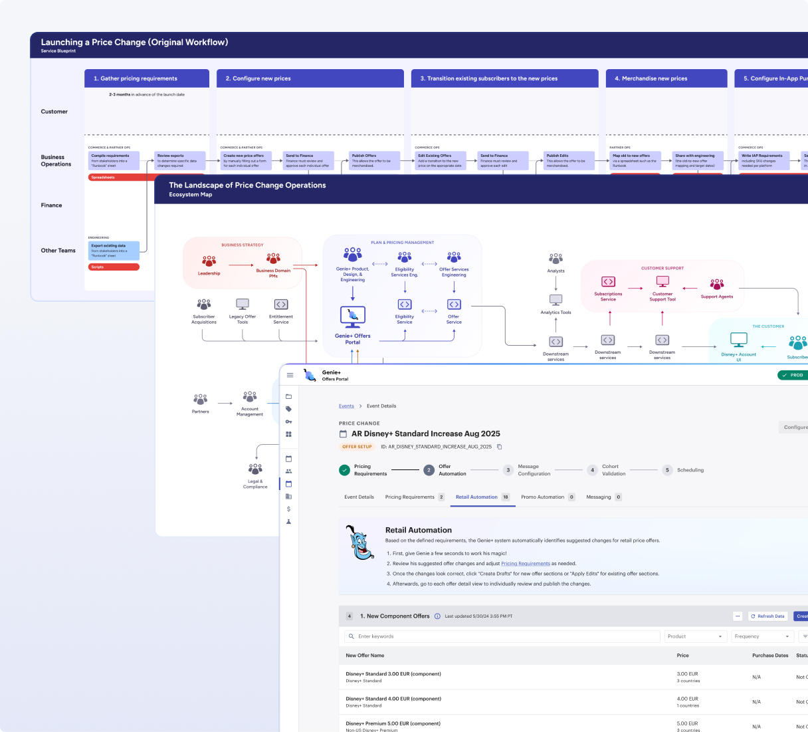

The Walt Disney Company
Streamlining Price Change Operations
Empowering business operations, accounting, and finance teams at Disney to efficiently launch subscription plans and promotions to millions of customers across the globe.
- Configuration Time
- 66%
- time spent configuring component offers
- Total Clicks
- 53%
- total clicks in the E2E workflow
- Revenue Enabled
- $1.3B
- in 2025 D2C operating income
